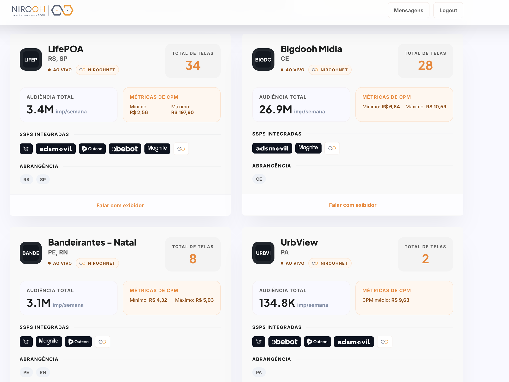

Nirooh para anunciantes · NiroohNet
Um briefing. Múltiplos territórios reais.
A NiroohNet reúne inventários DOOH independentes em uma proposta coordenada, com contexto local, audiência, flexibilidade de compra e acompanhamento especializado.
O inventário detalhado pode exigir acesso autorizado. Se ainda não estiver liberado, fale com o time Nirooh.
SULLifePOA
NORDESTEBandeirantes
SUDESTEBigdooh
NORTEUrbView
CoberturaNacional
CompraDireta + pDOOH
CuradoriaRede monitorada
Fonte: painel Audiência NiroohNet, consultado em 21/08/2026. Os números podem mudar com atualizações do inventário; cobertura e disponibilidade são confirmadas por briefing.
Inventário visível
Compare publishers, telas, audiência e CPM em uma única visão.
A página de inventário reúne as informações essenciais para começar um plano: abrangência, volume de telas, audiência estimada e conexões programáticas disponíveis por exibidor.
Filtros por região e cidade396
Registros de publisher/cidade no relatórioAo vivo
Dados para conversa comercialCPM
Caso o acesso ao inventário não esteja liberado, use o formulário ou WhatsApp para solicitar habilitação.

Planejamento sem fragmentação
Escala nacional com inteligência local.
A curadoria da Nirooh transforma uma rede distribuída em uma proposta de mídia legível para agência, anunciante e trading desk.
Objetivo antes da tela
Público, praça, contexto, período, formato e modelo de compra orientam a seleção.
Inventário compatível
Publishers e ambientes selecionados conforme aderência, cobertura e disponibilidade.
Compra flexível
Campanhas diretas, deals privados ou rotas programáticas conforme a estratégia.
Uma coordenação
Suporte do plano à entrega para reduzir retrabalho em múltiplas praças.
Ambientes de atenção
Encontre o contexto certo para cada mensagem.
O inventário combina formatos e jornadas urbanas diversas. A disponibilidade real é confirmada conforme o período da campanha.
Grandes formatos, mobiliário urbano, terminais e trajetos.
Presença em pontos de circulação e deslocamento para construir alcance e frequência contextual.
Decisão perto da compra.
Telas em jornadas de consumo, conveniência e experiência.
Tempo de permanência.
Academias, edifícios, saúde, educação e ambientes especializados.
Brasil além dos mercados óbvios.
Publishers que conhecem suas praças e entregam contexto local.
Audiência para planejar.
Indicadores documentados e validados conforme disponibilidade de cada rede.
Mídia Kit NiroohNet 2026
Leve a rede para a próxima conversa de planejamento.
Baixe a apresentação com posicionamento, formatos, cobertura e caminhos de ativação da NiroohNet.
Agências e anunciantes
Conte o que a campanha precisa alcançar.
Envie objetivo, praças, período e orçamento estimado. O time Nirooh devolve o próximo passo para planejamento e acesso ao inventário.
Enviar briefing
Os dados ajudam a direcionar sua solicitação para o inventário e o atendimento corretos.